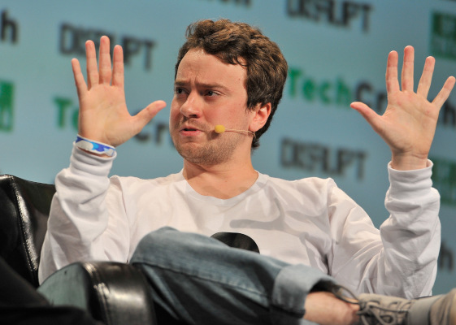

A História de George Hotz
Provavelmente você sabe que George Hotz, também conhecido como "geohot", é um dos hackers mais famosos do mundo por desbloquear o iPhone e o PlayStation 3. Mas talvez você não saiba detalhes sobre suas conquistas e a repercussão delas. Acompanhe esse artigo para aprender mais sobre esse gênio da tecnologia.
O Primeiro Feito: Desbloqueio do iPhone
Em 2007, George Hotz, com apenas 17 anos, ganhou fama ao ser o primeiro a desbloquear o iPhone, permitindo que ele fosse usado em qualquer operadora. Ele publicou o método online, o que causou grande impacto na comunidade de tecnologia e preocupou a Apple.
Hotz realizou o desbloqueio desmontando o iPhone e alterando seu software, um feito impressionante para a época. Ele trocou um iPhone desbloqueado por um carro e três novos iPhones, destacando sua habilidade e a demanda pelo desbloqueio.
Desafio Aceito: Desbloqueio do Sony
Não satisfeito com o sucesso anterior, Hotz voltou aos holofotes em 2010 ao anunciar que havia hackeado o PlayStation 3 da Sony, um console famoso por sua segurança. Ele conseguiu acesso ao sistema do console, permitindo a execução de software não autorizado.
A Sony reagiu processando Hotz, o que gerou uma batalha judicial que atraiu grande atenção da mídia e da comunidade hacker. O caso foi resolvido fora dos tribunais, mas destacou os desafios legais enfrentados por hackers.
Carreira e Contribuições Futuros
George Hotz continuou sua carreira na tecnologia, contribuindo para projetos de inteligência artificial e veículos autônomos. Ele fundou a empresa Comma.ai, focada em desenvolver sistemas de condução autônoma acessíveis.
Hotz se tornou uma figura respeitada e controversa, simbolizando o espírito hacker e a busca pelo conhecimento e liberdade digital.
Então é isso! Espero que você tenha gostado do nosso artigo com essa curiosidade sobre George Hotz, o gênio hacker.